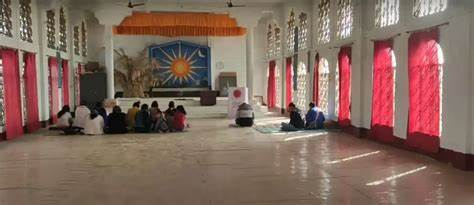

WELCOME
Harmony of Faith in Arunachal Pradesh
Religions in Arunachal Pradesh

Hinduism – Practiced by a significant population, blending with local traditions and beliefs.
Buddhism – A prominent faith, particularly among the Monpa, Sherdukpen, and other communities.


Christianity – Spread through missionary activities and embraced by several tribes.
Donyi-Polo – An indigenous faith worshipping the Sun and Moon, deeply rooted in tribal traditions.


Islam – Followed by a small segment of the population, adding diversity to the region's religious fabric.
Jainism – Though less prevalent, Jainism holds a historical presence in certain regions.